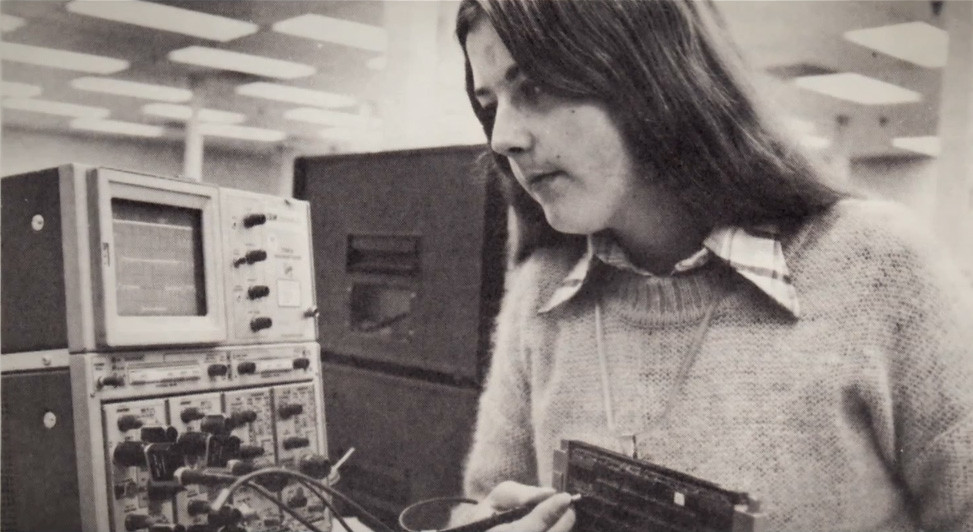

Un poco de historia...
Patty McHugh, considerada la madre de las placas base (mother of the motherboard).
Era una ingeniera de IBM que logro finales de los 80 creó el concepto de placa base modular que conocemos hoy en día.
(si bien es cierto que lógicamente algo más tosco) La creación de la placa base simplificó muchísimo la manera
en la que los componentes de hardware interactuaban los unos con los otros. Desde ese momento solo era necesario cargar
los drivers del nuevo componente que queríamos instalar para que todo funcionara.

Mas informacion
Nestor Jose Cordoba Rubio
Desarrollo de Software: Seccion A